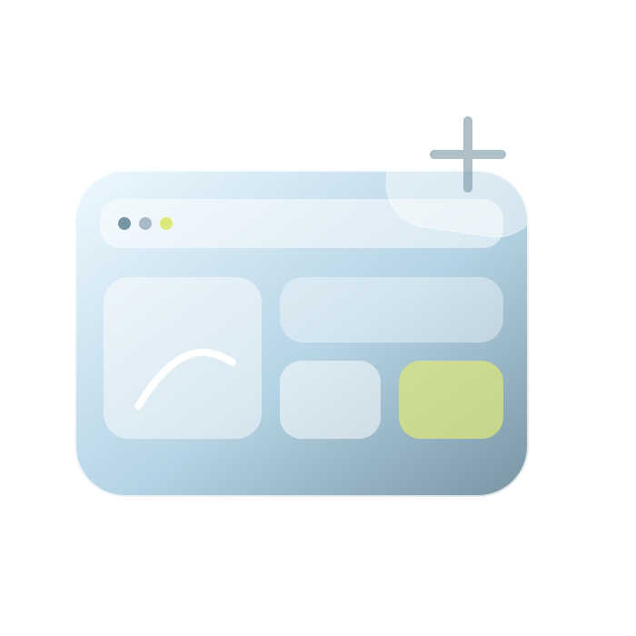
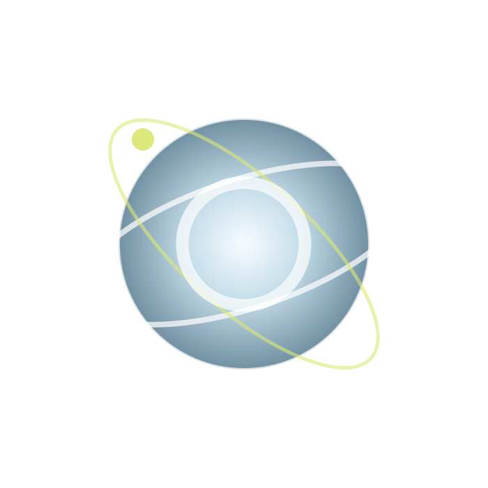
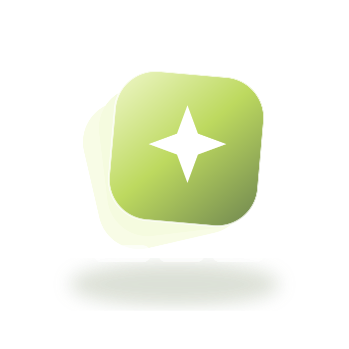
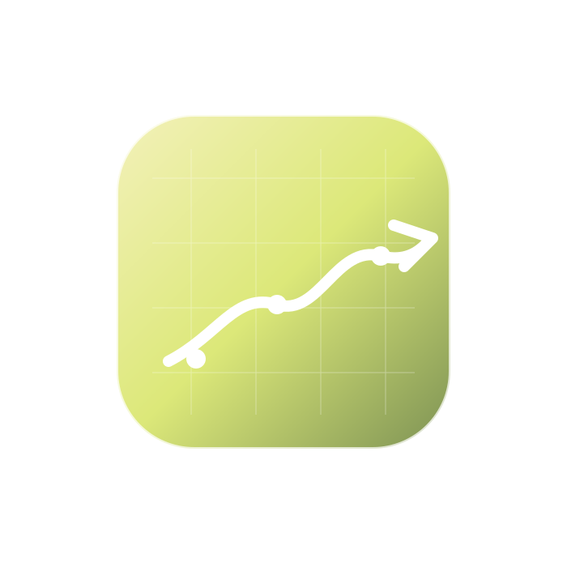

01BRAND CLARITY

Be unmistakable.
WHEN THE BRAND LOOKS GENERIC
STRATEGY · IDENTITY · ROLLOUT
WHEN THE BRAND LOOKS GENERIC
STRATEGY · IDENTITY · ROLLOUT
WHEN DIGITAL EXPERIENCE DOESN’T CONVERT
UX · CONTENT · CONVERSION
WHEN PEOPLE DON’T NOTICE OR REMEMBER
MOTION · CAMPAIGN · 3D
WHEN PRODUCTION IS TOO MANUAL
WORKFLOW · AI · AUTOMATION
WHEN THE PARTS WORK BUT NOT TOGETHER
STRATEGY · SYSTEMS · SCALEDon’t browse a list of services. Start with the problem. BARTSS shapes the right mix of strategy, design, motion and technology around the outcome you need.
Scroll through a living wall of products, interfaces and campaigns. The phone stays in focus while the world around it keeps moving.
Scroll changes the website inside the tablet. Each state demonstrates a different kind of BARTSS thinking: brand experience, product UX and conversion systems.
Positioning, identity and motion built as one recognisable system.
Product discovery, sample selection and follow-up designed as one conversion journey.
Each project is shown as a decision chain: the problem, the intervention and the outcome. The visual is evidence, not decoration.
Too many capabilities, not enough clarity.
Positioning, identity and motion rebuilt as one system.
A clearer offer with fewer competing messages.
Production depended on too many manual handoffs.
Storyboard, automation and QC connected into one flow.
A controlled path from idea to approved output.
Attention existed, but the message did not stick.
Campaign idea, motion and 3D built around one narrative.
A more memorable visual system for the launch.
These are not a second service menu. They are working proof that BARTSS can solve problems traditional studios usually stop before: production, decision logic, automation and operational workflows.
Brand, product and motion change what people see. BARTSS Labs changes what happens behind the interface — the workflow, logic and automation that make the experience possible.
AI-assisted visual production from idea to approved asset.
A decision layer for signals, portfolio context and financial workflows.
A personal operating layer that turns activity into priorities and next actions.
Interactive proposals that help clients understand, configure and approve what they are buying.
Pre-structured service stacks make buying easier. Every package can expand into a custom scope after the first conversation.
Drag the control. The visual language changes with the business state: fragmented to focused, generic to ownable, manual to scalable.
No invented performance numbers. Each case separates the starting condition, the intervention, the resulting state and the business impact we can honestly support.
BARTSS brand, digital and motion system.
Too many disciplines were visible at once, making the offer harder to understand.
Brand, product, motion and AI read as separate capabilities instead of one proposition.
Positioning, identity, web and motion were reorganised around customer problems and outcomes.
One recognisable system explains what BARTSS changes before listing what BARTSS can make.
Clearer offer hierarchy and fewer competing messages in the buying journey.
Product discovery, sample selection and request flow.
Finding a product and requesting a sample were disconnected actions.
Interest could stall before the visitor reached a clear sample-request action.
Product discovery, sample basket and request flow were designed as one continuous journey.
Visitors can discover, compare, select and request without leaving the same decision path.
Fewer steps between product discovery and qualified enquiry.
AI-assisted storyboard, visual production and QC workflow.
Too much manual work sat between an idea and an approved visual output.
Storyboard, references, visual generation and QC behaved like separate handoffs.
Storyboard logic, automation, consistency controls and QC were connected into one workflow.
The production state is visible from idea through review instead of being scattered across tools.
Fewer manual handoffs and a clearer approval path between production stages.